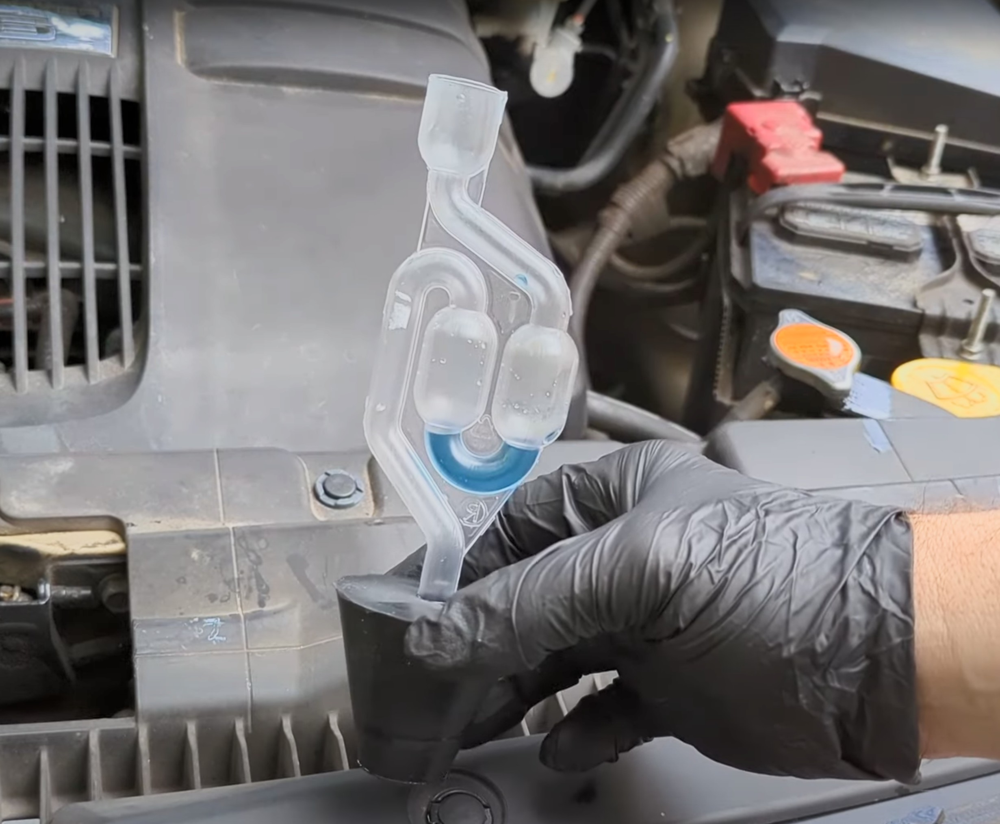

Combustion Leak Tester Guides and Advice
Start with the key buying and how-to pages below, then use the rest of the guide library for deeper troubleshooting around blown head gasket diagnosis.
Combustion leak tester hub
See the main commercial page targeting combustion leak tester, head gasket test kit, and block tester searches.
How to test for a blown head gasket
Follow the step-by-step process for using a block tester safely and getting a reliable answer.
How a combustion leak tester works
Understand what the fluid is detecting, why fitment matters, and what the tool can and cannot confirm.
Results explained
Learn how to read blue, green, yellow, weak positives, and contaminated test fluid.
Common block tester mistakes
Avoid the setup and sealing errors that lead to weak or misleading results.
Fitment and adapter guide
Get practical advice on sealing the tester properly at awkward radiator neck and tank openings.
Manuals and downloads
Get the quick-start guide, safety data sheet, and troubleshooting notes for the current tester kit.
About LeakLogic UK
Review company details, focus area, and support contact information for UK buyers.
More diagnostic articles
Head Gasket Sealant vs. Tester: Which Do You Need First?
Considering a head gasket sealant? Learn why you must use a combustion leak tester first to confirm the problem and avoid wasting money.
Read the guide →
How to Test a Head Gasket at Home – DIY Combustion Leak Test Guide
Our step-by-step guide to using a head gasket tester kit. Learn how to confirm a blown head gasket in your own driveway in minutes.
Read the guide →Blown Head Gasket Symptoms: 7 Warning Signs You Should Never Ignore
Learn the 7 key warning signs of a blown head gasket, like overheating and milky oil, that every UK driver needs to know about.
Read the guide →